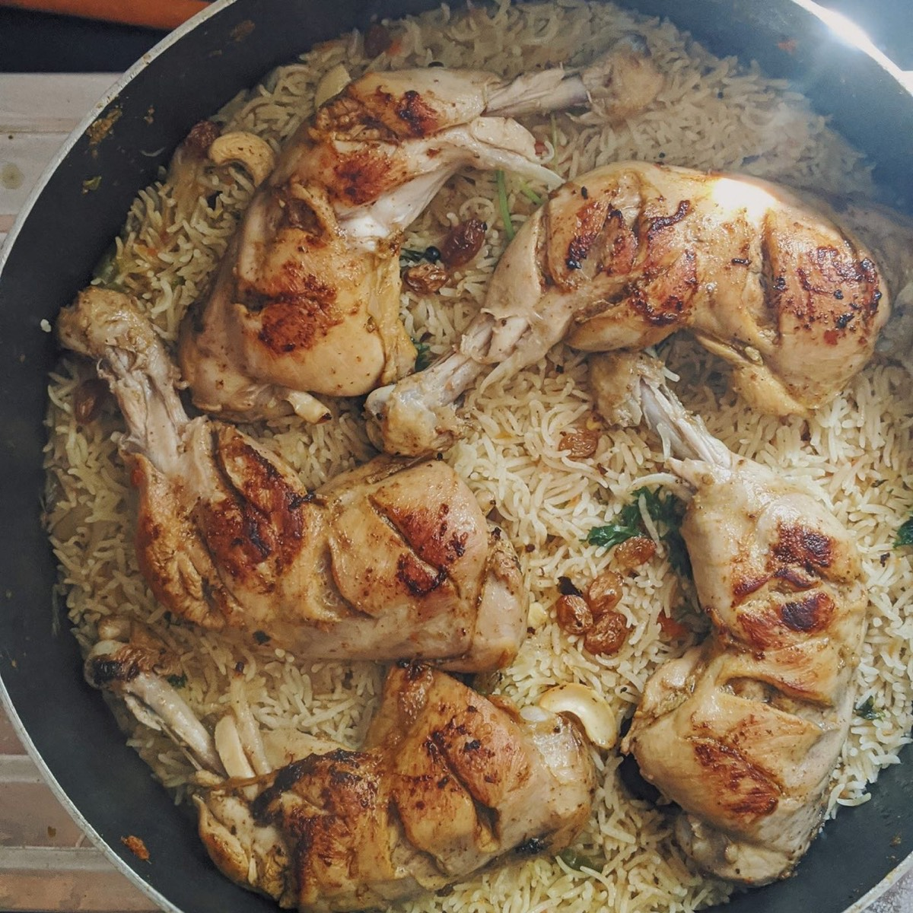

One-Pot Chicken and Rice
Browned pieces of chicken thigh on soft, savoury rice that cooked in the same pot. Plain, filling, hard to get tired of.

Stock photo by Faris Mohammed on Unsplash. It shows this kind of dish; yours will look a little different.
- Pot
- one pot or deep pan with a lid that fits snugly. For one, about 8 inches across (2 quarts). For two, about 10 inches across (3 quarts).
- Time
- 45 minutes, start to eating. For 25 of them you do nothing.
- Hard part
- leaving the lid alone. Rice cooks in trapped steam. Every time you lift the lid, steam leaves.
You need
| For one | For two | |
|---|---|---|
| Boneless, skinless chicken thighs | 6 oz (1 large or 2 small) | 12 oz (2 large or 4 small) |
| Long-grain white rice, dry (plain, not instant, not brown) | 1/2 cup | 1 cup |
| Chicken broth | 1 cup plus 2 tablespoons | 2 cups |
| Garlic | 1 clove | 2 cloves |
| Butter | 1 teaspoon | 2 teaspoons |
| Paprika | 1/4 teaspoon | 1/2 teaspoon |
| Italian seasoning (a jar of mixed dried herbs, in the spice aisle) | 1/4 teaspoon | 1/2 teaspoon |
| Salt | 1/4 teaspoon | 1/2 teaspoon |
| Cooking oil (olive or vegetable) | 2 teaspoons | 1 tablespoon |
Also: a knife, a cutting board, a wooden spoon, a plate, tongs or a fork for the raw chicken, a second clean fork, measuring cups and spoons, a timer, a sheet of aluminum foil in case the lid does not fit snugly, and an instant-read thermometer. A thermometer is the only sure way to know chicken is done. If you do not have one yet, cut the thickest piece fully open: there should be no pink and no glossy, see-through flesh, and when you are unsure, cook it longer. Optional: black pepper, a handful of frozen peas, a squeeze of lemon.
Contains: milk. Check your labels.
Swaps. Jasmine or basmati rice works with the same amounts. Do not use instant rice, brown rice or a microwave pouch here; they need different liquid and time. No Italian seasoning: use dried thyme or oregano. No butter: use 1 more teaspoon of oil.
The rest of it. Raw chicken you are not cooking today: freeze it flat in a zip-top bag, use it within 3 months, and thaw it overnight in the fridge, not on the counter. Broth: close the carton, keep it in the fridge, and use it within the number of days printed on the carton. It can replace the water in any soup or pot of rice.
Allergens. Contains milk (butter). To avoid it, use 1 more teaspoon of oil in place of the butter. Broth varies by brand, so check every label if you are cooking for someone with an allergy.
Before you turn on the stove
- Peel the garlic and chop it small. A clove is one segment of a garlic bulb. Pull one off, press it with the bottom of a mug until the papery skin cracks, and peel the skin away.
- Measure the rice and the broth exactly, with measuring cups. Rice is the one place where guessing does not work. Do not rinse the rice for this recipe; the liquid amount is set for dry rice.
- Check that the lid fits the pot with no gap. If you can see a gap or the lid rocks, tear off a sheet of foil a little wider than the pot and keep it next to the stove. It goes under the lid in step 6.
- Cut the chicken last. If a thigh is folded, unfold it so it lies flat. Cut it into large bite-size pieces, about 1 1/2 inches across, the size of a ping-pong ball. Try to make them all the same size so they finish together. Put the pieces on the plate. Sprinkle the salt, paprika and Italian seasoning over them and turn them with the tongs or fork until they are coated. Do not rinse raw chicken; rinsing splashes germs around the sink.
- Wash your hands, the knife and the board with hot water and soap before you touch anything else. Raw chicken should not touch anything you eat uncooked.
Cook
- Heat the pot. Put the pot on medium-high heat, about three quarters of the way up the dial. Add the oil. Wait 1 minute. You should see the oil shimmer and move easily when you tilt the pot.
- Brown the chicken. Add the chicken pieces in one layer, with a little space between them, using the tongs or fork. Set a timer for 3 minutes and leave them alone. When it rings, turn each piece over and cook 2 minutes more. Two sides of each piece should be golden brown. If a piece sticks when you try to turn it, give it 1 more minute and it will let go. The chicken is not cooked through yet. That is expected. It finishes cooking on top of the rice.
- Take the chicken out. Lift the pieces back onto the same plate. That is fine, because everything on the plate goes back into the pot to finish cooking. Turn the heat down to medium, the middle of the dial.
- Garlic and rice. Add the butter and the garlic. Stir for 30 seconds. You should smell the garlic. Add the dry rice and stir for 1 minute so every grain is coated. The rice should look shiny.
- Add broth. Pour in the broth. Scrape the bottom of the pot with the spoon to lift the brown bits; they are flavour. Turn the heat up to medium-high. Wait until the broth bubbles all over the surface, not just at the edge. This takes 1 to 2 minutes.
- Chicken back in, lid on, heat low. Give the rice one last stir and spread it flat. Lay the chicken pieces on top in one layer and pour in any juice from the plate. Put the plate and the tongs or fork in the sink now. They touched raw chicken, so do not use them again until they are washed with hot water and soap. If your lid does not fit snugly, lay the sheet of foil over the pot first, press the lid down onto it, and fold the foil edges up, away from the burner. Put the lid on. Turn the heat to low, the lowest setting on the dial. Set a timer for 15 minutes. Do not lift the lid and do not stir. Under the lid the broth should simmer. A simmer is a gentle bubbling with small bubbles, not a hard boil. You should hear a faint, quiet bubbling and see a wisp of steam at the lid's edge. If the lid rattles or liquid spits out, the heat is too high. Turn it down, or move the pot to a smaller burner.
- Rest. When the timer rings, turn off the heat. Leave the lid on. Set the timer for 10 minutes. Still no peeking. The rice finishes cooking in its own steam, and so does the chicken.
- Check the chicken. Now lift the lid. Do this check before you taste anything. Push the thermometer into the centre of the thickest piece. It is done at 165°F. Check a second piece as well. No thermometer: lift the thickest piece onto a clean plate and cut it fully open with a clean knife and fork. There should be no pink and no glossy, see-through flesh. Colour is a weaker test than a thermometer, so when you are unsure, cook it longer. If the chicken is not there yet, put the lid back on, turn the heat to low, cook for 5 more minutes, then check again. Repeat until it passes. Wash the thermometer probe with hot water and soap between checks.
- Check the rice and serve. Bite a few grains. They should be soft with no hard centre, and there should be no pool of broth at the bottom. Fluff the rice by lifting it gently with a clean fork, not the one that touched the raw chicken. If you are adding peas, stir them into the hot rice now and put the lid back on for 2 minutes. Taste the rice. Add a pinch of salt if it tastes flat. Eat from a clean plate, not the one that held the raw chicken.
You will see the word simmer on rice bags. It is what the pot did in step 6: a gentle bubbling under a lid on low heat.
If something goes wrong
- Chicken still under 165°F, or still pink, after the extra 5 minutes: keep going. Lid on, low heat, 5 minutes at a time, checking each time. If the pot looks dry, sprinkle 2 tablespoons of water over the rice first.
- Rice still hard and the pot is dry: sprinkle 2 tablespoons of water over the rice, put the lid back on, and cook on low for 5 more minutes. This is more likely with the one-serving amount, because a small batch loses more of its liquid as steam.
- Rice soft but wet: take the lid off and leave the pot on low for 2 to 3 minutes. The extra liquid cooks off.
- Rice stuck or browned on the bottom: the heat was too high. Scoop the rice from the top and leave the stuck layer. Next time use the lowest setting, or move to a smaller burner.
- Rice mushy: too much liquid or too much stirring. It is still fine to eat. Next time measure the broth exactly and stir only before the lid goes on.
Leftovers
Put leftovers in a covered container in the fridge within 2 hours of cooking, eat them within 3 days (rice keeps less well than most leftovers), and reheat until steaming hot all the way through (165°F if you have a thermometer). Cooked rice is the food people most often leave out too long, so do not leave the pot on the stove for later. Stir in a spoonful of water when you reheat.
The amounts for two were checked against 3 published versions of this dish; the amounts for one are scaled from them.
In the app this recipe is one step to a screen, with the amounts beside each step and timers that ring when your phone is locked. It is free, with four other complete recipes. First Pot for iPhone and iPad.